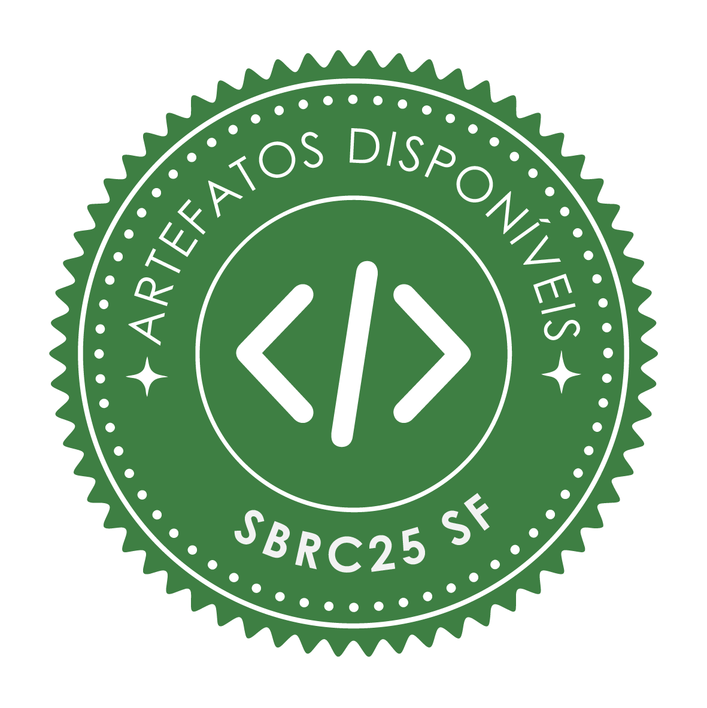
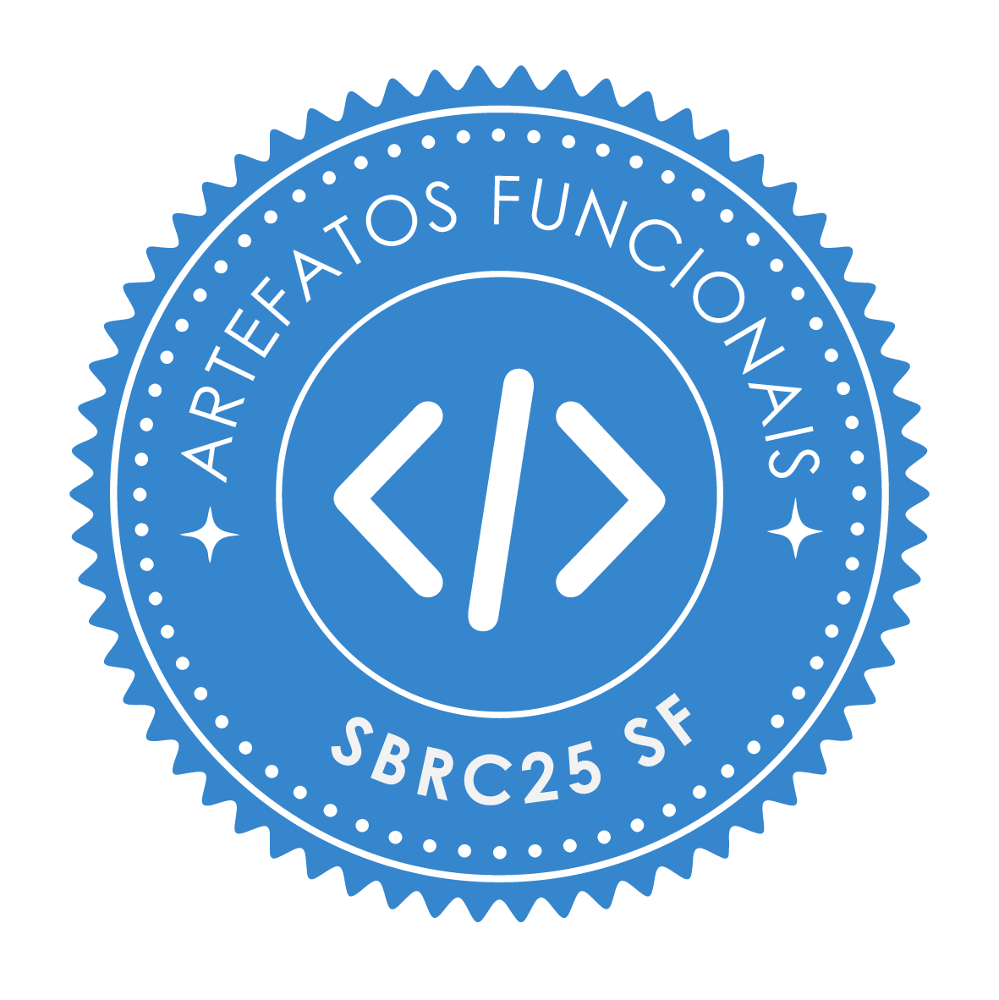

Avaliação de Artefato do SBSeg 2026
Em 2026, o SBSeg 2026 contará com um Comitê Técnico de Artefatos (CTA) para avaliar os artefatos dos artigos aceitos. Tais artefatos incluem software, dados, documentação complementar, resultados brutos, provas de conceito, modelos, avaliações detalhadas, benchmarks, etc. O artefato é um recurso essencial para os trabalhos de pesquisa e a qualidade dele é tão importante quanto a do próprio artigo científico.
O artefato será avaliado por um comitê específico, que poderá atribuir até quatro selos:
- Artefatos Disponíveis (SeloD),
- Artefatos Funcionais (SeloF),
- Artefatos Sustentáveis (SeloS), e
- Experimentos Reprodutíveis (SeloR).
O processo de avaliação de artefatos terá como base o processo de avaliação realizado por conferências renomadas como SIGCOMM, USENIX, CoNEXT e EuroSys. É fundamental que os autores leiam as descrições dos selos disponíveis para artefatos, bem como a descrição do que é esperado de um artefato.
Chamada para Artefatos
Autores com artigos aceitos no SBSeg 2026 são incentivados a enviar artefatos para serem avaliados pelo comitê técnico de artefatos (CTA). Um artefatos pode ser um software, dados, documentação, resultados brutos, provas, modelos, benchmarks, etc.
Quatro selos de qualidade podem ser considerados para um artefato. Estes sendo:
- Artefatos Disponíveis (SeloD);
- Artefatos Funcionais (SeloF);
- Artefatos Sustentáveis (SeloS); e
- Experimentos Reprodutíveis (SeloR).
Antes de enviar seu artefato, verifique os requisitos para a aquisição de cada selo. Caso você tenha alguma dúvida ou preocupação, você pode entrar em contato.
Instruções de submissão
Quatro selos de qualidade podem ser considerados para um artefato. Após a notificação de aceite do artigo, os autores podem opcionalmente submeter o(s) artefato(s) relacionado(s) (os autores do Salão de Ferramentas são obrigados a fazer a submissão do artefato).
Os autores devem fazer o registro do artefato na plataforma hotcrp. Este registro requer algumas informações como contato dos autores, um link para o artefato e opcionalmente um apêndice. Vale lembrar que o processo de revisão do CTA é independente da revisão do artigo no JEMS e as submissões são single-blind.
Importante ressaltar que para um artefato o comitê de revisão espera que:
- Os requisitos mínimos do README estejam presentes no repositório;
- Informações sobre recursos específicos estejam presentes no apêndice.
- O artefato atenda os critérios dos selos solicitados;
- Os autores respondam as perguntas postadas pelos revisores na plataforma, como enviem a carta de rebuttal dentro do prazo.
Todo o processo de revisão do artefato será realizado pela plataforma hotcrp. Os autores com artefatos registrados para o processo de revisão serão notificados sobre o acesso à plataforma e devem observar por emails enviados pela plataforma com dúvidas do comitê de revisão. Todo o processo de comunicação dos revisores de artefatos com os autores é realizado pelo hotcrp.
Requisitos mínimo README.md (Obrigatório)
Para facilitar o processo de avaliação dos artefatos, foi criado um modelo de README.md (Obrigatório) com todos os campos mínimos esperados para um artefato. Veja exemplos de README.md de Artefatos com 4 Selos.
# Título projeto
Resumo descrevendo o objetivo do artefato, com o respectivo título e resumo do artigo.
# Estrutura do readme.md
Apresenta a estrutura do readme.md, descrevendo como o repositório está organizado.
# Selos Considerados
Os autores devem descrever quais selos devem ser considerados no processo de avaliação. Como por exemplo: ``Os selos considerados são: Disponíveis e Funcionais.''
# Informações básicas
Esta seção deve apresentar informações básicas de todos os componentes necessários para a execução e replicação dos experimentos.
Descrevendo todo o ambiente de execução, com requisitos de hardware e software.
# Dependências
Informações relacionadas a benchmarks utilizados e dependências para a execução devem ser descritas nesta seção.
Busque deixar o mais claro possível, apresentando informações como versões de dependências e processos para acessar recursos de terceiros caso necessário.
# Preocupações com segurança
Caso a execução do artefato ofereça algum tipo de risco para os avaliadores. Este risco deve ser descrito e o processo adequado para garantir a segurança dos revisores deve ser apresentado.
# Instalação
O processo de baixar e instalar a aplicação deve ser descrito nesta seção. Ao final deste processo já é esperado que a aplicação/benchmark/ferramenta consiga ser executada.
# Teste mínimo
Esta seção deve apresentar um passo a passo para a execução de um teste mínimo.
Um teste mínimo de execução permite que os revisores consigam observar algumas funcionalidades do artefato.
Este teste é útil para a identificação de problemas durante o processo de instalação.
# Experimentos
Esta seção deve descrever um passo a passo para a execução e obtenção dos resultados do artigo. Permitindo que os revisores consigam alcançar as reivindicações apresentadas no artigo.
Cada reivindicações deve ser apresentada em uma subseção, com detalhes de arquivos de configurações a serem alterados, comandos a serem executados, flags a serem utilizadas, tempo esperado de execução, expectativa de recursos a serem utilizados como 1GB RAM/Disk e resultado esperado.
Caso o processo para a reprodução de todos os experimentos não seja possível em tempo viável. Os autores devem escolher as principais reivindicações apresentadas no artigo e apresentar o respectivo processo para reprodução.
## Reivindicações #X
## Reivindicações #Y
# LICENSE
Apresente a licença.
É obrigatório que TODAS as Seções apresentadas no requisito mínimo README.md estejam presentes. Se você tiver qualquer dúvida, por favor, entre em contato conosco.
Note Antes de submeter o seu artefato, é interessante que os autores realizem a instalação e execução do seu artefato em um ambiente novo (máquina virtual) seguindo somente as instruções presente no README.md.
Recursos específicos ou restrições
Caso recursos adicionais sejam necessários (infraestrutura de nuvem, chaves SSH, etc.) para a avaliação do artefato, estas informações devem ser submetidas através de um apêndice. Neste os autores incluem informações adicionais (privadas, como chaves SSH para acessar o Google Cloud) para auxiliar os revisores do Comitê Técnico de Artefatos. O modelo LaTeX de apêndice está disponível em Exemplo-Apendice. Todos os campos devem ser apresentados no apêndice, além dos requisitos mínimos para o README.md que são obrigatórios.
O apêndice é um critério adicional no momento que recursos específicos acabam sendo necessários para a avaliação do artefato ou restrições de acesso existam.
Requisitos por selo
Para que o trabalho/artefato seja apto a receber o selo, os respectivos requisitos devem ser alcançados:
Artefatos Disponíveis (SeloD)
É esperado que o código e/ou dados estejam disponíveis em um repositório estável (como GitHub e GitLab). Neste repositório é esperado encontrar um README.md com os requisitos mínimos. O arquivo README.md do repositório pode ser o mesmo arquivo submetido para apreciação do CTA.
Artefatos Funcionais (SeloF)
É esperado que o código e/ou artefato possa ser executado e o revisor consiga observar algumas de suas funcionalidades. Para adquirir este artefato, é importante que informações adicionais estejam presentes no README.md do repositório, como
- lista de dependências;
- lista de versões das dependências/linguagens/ambiente;
- descrição do ambiente de execução;
- instruções de instalação e execução;
- um exemplo de execução mínima.
Artefatos Sustentáveis (SeloS)
É esperado que o código e/ou artefato esteja modularizado, organizado, inteligível e de fácil compreensão. Para obter o selo é interessante que:
- exista uma documentação mínima do código (descrevendo arquivos, funções,..);
- legibilidade mínima de código;
- permita que os avaliadores consigam identificar as principais reivindicações do artigo no artefato.
Experimentos Reprodutíveis (SeloR)
É esperado que o revisor consiga reproduzir as principais reivindicações apresentadas no artigo. Sugere-se a utilização de máquinas virtuais, containers ou scripts que facilitem e reduzam o tempo de criação do ambiente. Para obter este selo é esperado:
- instrução para executar as principais reivindicações (e.g., resultados dos principais gráficos/tabelas);
- descrição de um processo de como foram executados os experimentos para chegar até o resultado do artigo. Para atender esses requisitos sugere-se a inclusão de script(s) que automatizem ao máximo todo o processo de reprodução;
Processo de revisão
O processo de revisão de artefatos está dividido em duas etapas de revisão, como autor você deve ficar atento às perguntas levantadas pelos revisores na plataforma. Após o término da primeira etapa de revisão (r1), os autores devem submeter uma carta de rebuttal que visa esclarecer problemas encontrados pelos revisores e auxiliar no processo de revisão. Por fim, os revisores vão considerar as revisões da primeira fase e a carta de rebuttal para tomar uma decisão na segunda fase de avaliação (r2-decision).
Calendário de revisão para o ciclo de revisão:
- Prazo para Submissão de Artefatos
- Rodada 1 de Revisão (r1)
- Fase de Rebuttal
- Decisão do Revisor (r2-decision)
*As datas estão disponíveis no hotcrp.
Instruções para revisão
Seu objetivo como um revisor de artefato consiste em garantir que a qualidade do artefato corresponda com o conteúdo do artigo e os requisitos mínimos esperados para a obtenção de cada selo.
Note: Observe que o período de revisão é relativamente curto. Recomendamos iniciar suas revisões assim que receber sua tarefa, já que dois selos requerem a execução do artefato.
Passos para a Avaliação de um Artefato
O processo de revisão pode ser realizado em um ambiente de sua preferência, desde que satisfaça os requisitos mínimos do ambiente de execução esperado para o artefato. Recomendamos a execução do artefato (quando aplicável) em um ambiente virtual, por trazer praticidade para os revisores e garantir que componentes presentes na sua máquina local não prejudiquem o processo de avaliação (uma instalação limpa em um ambiente novo pode reduzir imprevistos).
Todos os recursos adicionais necessários para execução do artefato (infraestrutura de nuvem, chaves SSH etc.) devem estar presentes no apêndice que descreve o artefato.
O artefato em avaliação está relacionado a um artigo em avaliação pelos comitês técnicos da conferência. O foco de um revisor do CTA está voltado para o artefato e não para a revisão do artigo. No entanto, caso seja encontrado algum problema, ele deve ser relatado aos coordenadores de avaliação de artefatos.
Note: Lembre-se de que todos os artefatos, análises e discussões são confidenciais.
Processo de Revisão
No momento que um artefato é alocado para revisão, você já pode começar o trabalho de revisão. Quanto antes você começar melhor, pois permite que problemas sejam encontrados e discutidos com os autores. Neste ano teremos a revisão em 2 etapas:
-
Na primeira etapa (r1) os revisores fazem a revisão do artefato considerando os critérios de avaliação. Durante este processo mensagens podem ser postadas na plataforma hotcrp, estas podem ser discussões entre membros do comitê de revisão, como perguntas para os autores, como por exemplo perguntas em relação a problemas encontrados no artefato. No final do processo de revisão você deve submeter um parecer que será apresentado para os autores. Este deve destacar as etapas que foram realizadas para a avaliação de cada selo, o processo de execução observado e resultado alcançado (problemas no processo de execução deve estar claramente explicados na revisão). Os autores vão responder aos pontos levantados nesta etapa na fase de rebuttal.
-
A segunda etapa (r2-decision) ocorrerá após a fase de rebuttal dos autores. No qual, os autores com base na revisão realizada na primeira fase devem esclarecer dúvidas, solucionar problemas encontrados, informar eventuais equívocos e/ou explicar algo que passou despercebido aos revisores. Seu papel como revisor na segunda etapa consiste em considerar os pontos levantados na primeira fase e na fase de rebuttal para tomar uma decisão em quais selos devem ser atribuídos ou não.
Calendário de revisão para o ciclo de revisão:
- Prazo para Submissão de Artefatos
- Rodada 1 de Revisão (r1)
- Fase de Rebuttal
- Decisão do Revisor (r2-decision)
*As datas estão disponíveis no hotcrp.
Note Procure escrever sua revisão de forma precisa, impessoal e polida, considerando que a mesma estará disponível para os autores em uma fase posterior do processo.
Critérios de avaliação
Para realizar esta atividade com excelência, você deve considerar os quatro Selos e seus respectivos requisitos mínimos que devem ser alcançados para a alocação de um selo:
Artefatos Disponíveis (SeloD)
É esperado que o código e/ou dados estejam disponíveis em um repositório estável (como GitHub e GitLab). Neste repositório é esperado encontrar um README.md com os requisitos mínimos do README.md. Os requisitos mínimos do README.md sendo:
# Título projeto
Resumo descrevendo o objetivo do artefato, com o respectivo título e resumo do artigo.
# Estrutura do readme.md
Apresenta a estrutura do readme.md, descrevendo como o repositório está organizado.
# Selos Considerados
Os autores devem descrever quais selos devem ser considerados no processo de avaliação. Como por exemplo: ``Os selos considerados são: Disponíveis e Funcionais.''
# Informações básicas
Esta seção deve apresentar informações básicas de todos os componentes necessários para a execução e replicação dos experimentos.
Descrevendo todo o ambiente de execução, com requisitos de hardware e software.
# Dependências
Informações relacionadas a benchmarks utilizados e dependências para a execução devem ser descritas nesta seção.
Busque deixar o mais claro possível, apresentando informações como versões de dependências e processos para acessar recursos de terceiros caso necessário.
# Preocupações com segurança
Caso a execução do artefato ofereça algum tipo de risco para os avaliadores. Este risco deve ser descrito e o processo adequado para garantir a segurança dos revisores deve ser apresentado.
# Instalação
O processo de baixar e instalar a aplicação deve ser descrito nesta seção. Ao final deste processo já é esperado que a aplicação/benchmark/ferramenta consiga ser executada.
# Teste mínimo
Esta seção deve apresentar um passo a passo para a execução de um teste mínimo.
Um teste mínimo de execução permite que os revisores consigam observar algumas funcionalidades do artefato.
Este teste é útil para a identificação de problemas durante o processo de instalação.
# Experimentos
Esta seção deve descrever um passo a passo para a execução e obtenção dos resultados do artigo. Permitindo que os revisores consigam alcançar as reivindicações apresentadas no artigo.
Cada reivindicações deve ser apresentada em uma subseção, com detalhes de arquivos de configurações a serem alterados, comandos a serem executados, flags a serem utilizadas, tempo esperado de execução, expectativa de recursos a serem utilizados como 1GB RAM/Disk e resultado esperado.
Caso o processo para a reprodução de todos os experimentos não seja possível em tempo viável. Os autores devem escolher as principais reivindicações apresentadas no artigo e apresentar o respectivo processo para reprodução.
## Reivindicações #X
## Reivindicações #Y
# LICENSE
Apresente a licença.
Artefatos Funcionais (SeloF)
É esperado que o código e/ou artefato possa ser executado e o revisor consiga observar algumas de suas funcionalidades. Para adquirir este artefato, é importante que informações adicionais estejam presentes no README.md do repositório, como
- lista de dependências;
- lista de versões das dependências/linguagens/ambiente;
- descrição do ambiente de execução;
- instruções de instalação e execução;
- um exemplo de execução mínima.
Note: Como revisor além de verificar que o artefato possua os respectivos critérios é necessário a execução do artefato. Na sua revisão será esperado uma prova de execução, com alguns dos outputs apresentados pela ferramenta.
Artefatos Sustentáveis (SeloS)
É esperado que o código e/ou artefato esteja modularizado, organizado, inteligível e de fácil compreensão. Para obter o selo é interessante que:
- exista uma documentação mínima do código (descrevendo arquivos, funções,..);
- legibilidade mínima de código;
- permita que os avaliadores consigam identificar as principais reivindicações do artigo no artefato.
Experimentos Reprodutíveis (SeloR)
É esperado que o revisor consiga reproduzir as principais reivindicações apresentadas no artigo. Para obter este selo é esperado:
- instrução para executar as principais reivindicações (e.g., resultados dos principais gráficos/tabelas);
- descrição de um processo de como foram executados os experimentos para chegar até o resultado do artigo;
Note: Para a atribuição do selo você deve reproduzir (executar) os experimentos apresentados no artigo através do conteúdo encontrado no artefato. Alcançando as reinvidicações encontradas no artigo, reproduzindo tabelas e figuras. Na sua revisão é esperado um resumo com estes resultados.
Entrega das Revisões
Para cada artefato, você deve produzir uma breve revisão justificando a razão por atribuir ou negar um selo ao artefato. Esta avaliação só deve ser completada após o processo de avaliação ter sido realizado.
Para facilitar o processo de avaliação, um exemplo está disponível junto ao formulário de submissão.
Melhores trabalhos
Para atribuir os prêmios de melhores trabalhos, utilizaremos como um dos critérios a classificação atribuída pelos revisores na categoria “Candidato ao Prêmio Artefato Distinto”. Dessa forma, espera-se que os revisores atribuam notas mais elevadas (3 e 4) para trabalhos com pelo menos 3 selos e que se destaquem pela qualidade em relação aos demais. Ainda, se espera que trabalhos que não obtiveram mais de dois selos não possuam nota superior a nota mínima (1).
Exemplos de Artefatos com 4 Selos
A seguir, apresentam-se alguns dos principais artefatos contemplados com os quatro selos no último processo de revisão. Os respectivos arquivos README.md servem como exemplos de boas práticas de documentação e organização.
- Cloud AutoDroid: Um Sistema Distribuído Escalável para Execução de Ferramentas de IA Generativa
- HackInSDN Dashboard
- Mininet-GUI: Uma Abordagem Visual e Interativa para Experimentação em Redes SDN
- THEXCAD - Sistema de Tesselação Hexagonal para cobertura de área com drones
- UNetyEmu: Unity-based simulator for aerial and non-aerial vehicles with integrated network emulation
- VulnSyncAI: PLN e LLMs para Construção e Atualização Contínua de Datasets de Vulnerabilidades
Resultados
Trabalhos com Selos Atribuídos
Trilha Principal (TP)
| Disp. | Func. | Sus. | Repr. | Título do Trabalho | Artefato |
|---|---|---|---|---|---|
 | Uma Abordagem Baseada em LLMs Open-Weight para Detecção e Classificação de Vulnerabilidades em Relatórios OSINT | Repositório | |||
 |  | CodeBERT Detection Pipeline for SQL Injection Detection: A Comparison with other ML Models | Repositório | ||
| Sentry: Uma Contramedida Adaptativa contra Ataques de Negação de Serviço de Baixo Volume | Repositório | ||||
|  | WebTrap: Uma ferramenta de detecção de ataques em requisições HTTP utilizando Aprendizado de Máquina | Repositório | ||
| | Design, Formal Verification, and Evaluation of a Post-Quantum EDHOC Variant for UAV Communications | Repositório | ||
| | When Balancing Harms: Structural Conditions That Degrade Android Malware Detection After Class Imbalance Correction | Repositório | ||
| | $1 Yacht Sale: Tampering with Signed PDFs in Plain Sight | Repositório | ||
| Statistical Ranking: A Voting-Based Ensemble Approach to Feature Selection in Android Malware Detection | Repositório | |||
| | Do Bruto ao Brilho: Compactação Semântica com Preservação de Proveniência para Traços Dinâmicos de Malware Android | Repositório | ||
| | Uma Ferramenta para Classificação de Tráfego Cifrado em VPNs sem Inspeção da Carga Útil dos Pacotes | Repositório | ||
| | OIDC4AC: Extending OpenID Connect for Structured and Negotiable Authentication Contexts | Repositório | ||
| | Desenvolvimento de um testbed para implementação e avaliaço de protocolos de segurança em redes veiculares | Repositório | ||
| MulitaMiner: A Multi-Version Evaluation of LLM-Based Vulnerability Report Extraction | Repositório | ||||
| | A Uniform Random-Sample Security Measurement of Docker Hub Images | Repositório | ||
| | A Multi-Scanner Census of the Linux Operating-System Base Images of Docker Hub | Repositório | ||
| | Not All 4-bit Quantizers Are Equal: Deployment-Time Mitigation of PII Leakage in Fine-Tuned Small Language Models | Repositório | ||
| | Context-Aware SIEM Rule Generation with LLMs: When Site Profiles Are Not Enough | Repositório | ||
| UFU-Do53-EXF e UFU-DoH-EXF: conjuntos de dados para detecção de exfiltração via DNS | Repositório | ||||
| | Análise Automatizada de Logs de Instrumentação Binária Dinâmica para Identificação de Comportamentos Evasivos em Executáveis Windows | Repositório | ||
| Longitudinal Analysis of iOS In-App Purchase Implementation Vulnerabilities | Repositório | |||
| | VeritaPlugin: Uma Extensao de Navegador para Detecção Semântica de Fraudes no Facebook | Repositório | ||
| | Avaliação de Risco usando Engenharia de Prompt em LLMs | Repositório | ||
| | Auditing Technical Security Debt through Retrieval-Augmented Generation: A CWE-, CAPEC-, and STRIDE-Based Approach | Repositório | ||
| Uma Arquitetura de Aprendizado Federado Homomórfica para Treinamento de LSSVM usando CKKS e Decomposição QR de Householder | Repositório | ||||
| | Detecção Direta versus Indireta em Pipelines DevSecOps: Análise de Ruído Taxonômico e Calibração de Portões de Segurança Progressivos | Repositório | ||
| | Delta-XMSS: Incremental State Optimization for Post-Quantum Hash-Based Signatures | Repositório | ||
| GPU Acceleration of VOLEitH-Based Post-Quantum Signatures: A Reusable Fragment-Graph Framework | Repositório | ||||
| Crypto-Agile Ethereum Transactions: A Hybrid Post-Quantum Architecture for Besu | Repositório | ||||
| Security-First Evaluation of Text-to-Terraform: Benchmarking LLMs and SLMs for Secure IaC Generation | Repositório | |||
| Retrofitting Intel CET’s Indirect Branch Tracking into Legacy Binaries through Static Binary Rewriting | Repositório | ||||
| | EDNS0 como Vetor Adversarial: Lacunas de Visibilidade Empírica em Ferramentas Populares de DPI e Detecção de Intrusão | Repositório | ||
| DAST-AI: Reducing False Positives in API Security Testing via LLM-based Semantic Analysis | Repositório | ||||
| BAGLEY: Orquestração Automatizada Baseada em LLM de Ciclos de Purple Teaming e MITRE CALDERA | Repositório | ||||
| Fusão de Características em Espaços Vetoriais para Detecção Estática de Cryptojacking em WebAssembly | Repositório | |||
| | Análise e melhoria da segurança de aplicação do padrão T-REX na emissão de tokens fungíveis e não fungíveis para certificados de energia renovável | Repositório | ||
| Network Flow Integration to Improve Generalization of Machine Learning-Based IDS | Repositório | |||
| Além da Distância Linguística: Jailbreaks Multilíngues em LLMs Especializados por Idioma | Repositório | ||||
| BraZKIL: um Framework híbrido para verificação de maioridade via SSI, DID/VC e Divulgação Seletiva em conformidade com o ECA Digital | Repositório | ||||
| | Supporting Upstream Vulnerability Triage in Fork-Based Development | Repositório | ||
| Autonomous Red Teaming for Large Language Models: A Minimally Supervised Approach Using Specialized Agents | Repositório | ||||
| On the concrete hardness of the Approximate GCD problem | Repositório | ||||
| Characterizing Malware-as-a-Service-Oriented Android Fraud Campaigns Targeting Brazil | Repositório | |||
| | Evaluating Lightweight Transformers for Network Intrusion Detection under Temporal Drift: A Comparative Study with MAWIFlow | Repositório |
Salão de Ferramentas (SF)
| Disp. | Func. | Sus. | Repr. | Título do Trabalho | Artefato |
|---|---|---|---|---|---|
| | AIaCGateGuard: A Security-First Pipeline for Benchmarking LLM- and SLM-Generated Infrastructure-as-Code | Repositório | ||
| | AdminForge: Declarative Privileged-Identity Management for Linux Server Fleets | Repositório | ||
| | ZeroLINC: Training-Free Local Classification of Security Incident Reports | Repositório | ||
| | AttackZoo: A Reproducible Testbed for Attack Execution and Network Traffic Dataset Generation | Repositório | ||
| | MulitaMiner: An LLM-Based Tool for Structuring Vulnerability Scanner Reports | Repositório | ||
| | SecureForge Web: Avaliação Guiada e Hardening de Aplicações Web com Análise Assistida | Repositório | ||
| TopVenues: An Executable Corpus and Research Tool for Cybersecurity Literature Reviews | Repositório | ||||
| | PQCinBlock: uma ferramenta para análise do impacto de algoritmos de Criptografia Pós-Quântica em blockchains via benchmark e simulação | Repositório | ||
| GT-LFI: Anonimização, Classificação e Aprendizagem Gamificada a partir de Incidentes Reais | Repositório | ||||
| RV4Android: An End-to-End Pipeline for Runtime Verification of Cryptographic API Specifications on Contemporary Android Applications | Repositório | |||
| | Triager: An Open-Source Platform for Automated Forensic Triage and Investigation | Repositório | ||
| | AmCache-EvilHunter: Automating Evidence of Execution Extraction from the Amcache.hve Artifact | Repositório | ||
| FridaForge: Geração Automatizada de Scripts Frida com Contexto Dinâmico da Aplicação | Repositório | ||||
| Typhon DB Sentry: Practical Queryable Column-Level Encryption with Fast Format-Preserving Decryption | Repositório | |||
| | DefendGraph: Sistema Especialista Semântico para Alertas Wazuh com MITRE D3FEND | Repositório | ||
| | IoTEdu Core: Multi-IDS Correlation and Automated Containment of Attacks in Institutional IoT Networks | Repositório | ||
| | Toward Agentic Intrusion Detection in the Internet of Things: Rule Generation and Live Validation for XRCE-DDS Attacks | Repositório | ||
| | KETRIN: Elicitação Adaptativa de Conhecimento para Diagnóstico de Maturidade em Proteção de Dados | Repositório | ||
| ComplianceNet: Uma ferramenta de governança contínua no gerenciamento de redes baseadas em NETCONF | Repositório | ||||
| Extensões ao DefectDojo para Priorização de Vulnerabilidades | Repositório | |||
| SHOGUN: An Integrated Dashboard for Vulnerability Analysis via Internet-Wide Search Engines | Repositório |
Workshop de Trabalhos de Iniciação Científica e de Graduação (WTICG)
| Disp. | Func. | Sus. | Repr. | Título do Trabalho | Artefato |
|---|---|---|---|---|---|
| | CryptoCensus: Cryptographic Posture and Post-Quantum Readiness of Docker Hub | Repositório | ||
| | RAGtrap: Source Revocation and Indexed Provenance Lookup for Poisoned RAG Corpora | Repositório | ||
| | PixGuard-Sim: A Deadline-Aware Testbed for Pix Fraud Detectors | Repositório | ||
| | On-Premise vs. Cloud: Local LLMs for Vulnerability Extraction from Security Scanner Reports | Repositório | ||
| | Implementação e avaliação do algoritmo pós-quântico ML-KEM em smart cards | Repositório |
Trabalhos Destaque na Categoria Artefatos
TBA
Revisores Destaque
TBA
Organizadores
Coordenadores do CTA
Tiago Heinrich (UFPR/MPI)
Roben Castagna Lunardi (IFRS)
Lourenco Alves Pereira Jr (ITA)
Comitê Técnico de Artefatos (CTA)
Aline de Lurdes Zuliani Lunkes (UNIPAMPA)
Alison Gonçalves Schemitt (PUCRS)
Anderson Frasão (UFPR)
Anderson Bergamini de Neira (UFPR)
Carlos Gabriel Leite Barros (UFC)
Cassius Clay Batista da Silva Filho (UFRN)
Cristhian Eduardo Kapelinski de Avilla (UNIPAMPA)
Cristian Souza (IME/USP e Kaspersky Lab)
Davi Daniel Gemmer (RNP)
David Arantes Pereira (UFU)
Diego Abreu (RNP)
Diego Canizio Lopes (IFAC)
Diego Kreutz (UNIPAMPA)
Douglas Lautert (UNIPAMPA)
Eduardo Kugler Viegas (PUCPR)
Eduardo Luzeiro Feitosa (UFAM)
Eduardo Takeo Ueda (UFSCar)
Edvar Afonso Luciano Filho (PETROBRAS)
Érico Amaral (UNIPAMPA)
Felipe Almeida (ITA)
Fernando Barcelos Rosito (UFCSPA)
Fernando Nakayama de Queiroz (UFRJ)
Fiterlinge Martins de Sousa (RNP)
Flavio Luiz dos Santos de Souza (IFSP/ ITA)
FRANCISCO NETO (UFAM)
Françoa Taffarel Rosário Corrêa (ITA - MARINHA DO BRASIL)
Gabriel Rodrigues da Rocha (UNIPAMPA)
Guilherme Dall'Agnol Deconto (PUCRS)
Gustavo Bastos (USP)
Gustavo Zambonin (UFSC)
Ivalcleb Souza (IFPB)
Jéferson Campos Nobre (UFRGS)
Jessica Castro (Universidade de Coimbra)
João Ribeiro Andreotii (UFPR)
Juan Marcelo Dell'Oso (IFAM)
Kauane Cordeiro (RNP)
Kelson Carvalho Santos (UFU / IFPI)
Laerte Peotta de Melo (UnB)
Leonardo dos Santos Teixeira (PUCRS)
Leonardo Toshinobu Kimura (USP)
Leonardo de Jesus Bitzki (UNIPAMPA)
Lucas Cupertino Cardoso (USP)
Lucas Martins (UFU)
Lucas Mayr (UFSC)
Luciano Hanna El Adji (UFF)
Luiz Alberto Cabral Bianchi Júnior (UFSM)
Luiz Arthur Feitosa dos Santos (UTFPR)
Maria Elenice de Araújo Pedrosa (RNP)
Matheus Cabral (UNIPAMPA)
Matheus Vilarim Pereira dos Santos Cesar (CISSA)
Murilo Chianfa (UEL)
Rafael Santa Rosa Alves (UNICAMP)
Rafael Teodósio Pereira (UFSM)
Roben Castagna Lunardi (IFRS)
Rodolfo S Villaca (UFES)
Rodrigo de Meneses (UNICAMP)
Rodrigo Mansilha (UNIPAMPA)
Rômulo Ferreira dos Santos (UnB)
Rubens Silva (UECE)
Thiago Guimarães Tavares (IFTO)
Vanderson da Silva Rocha (UFAM)
Vitor Reiel Moura de Lima (UFC)
Weslei Ferreira Santos (UFBA)
Willen Borges Coelho (IFES)
Contato
Comite Tecnico comite.tecnico.de.artefatos@gmail.com